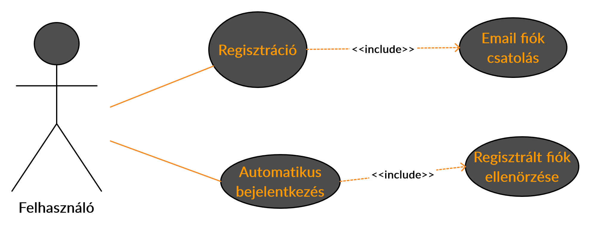
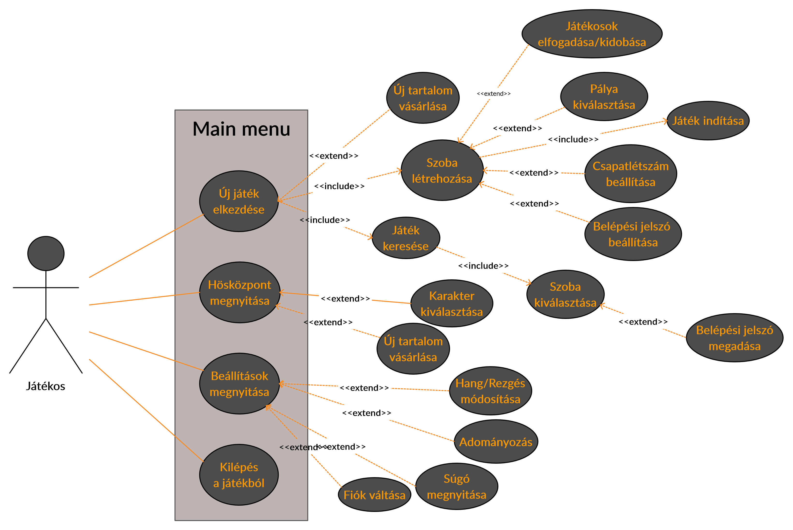
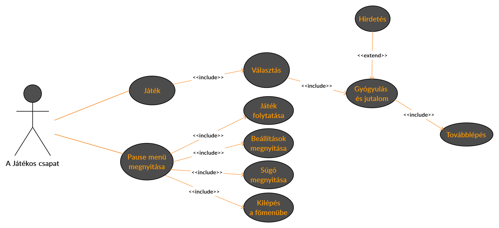
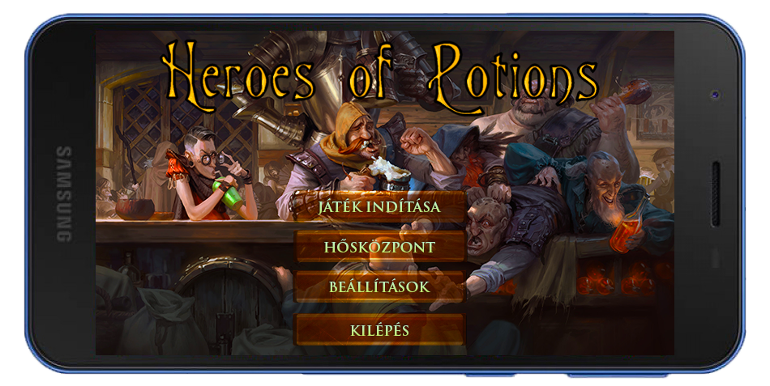
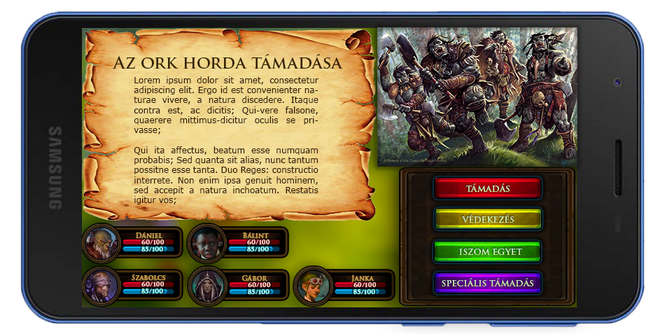

Csoport neve: HighSoft
Feladatsorszáma: F3
Feladat címe: SRS dokumentum
SRS dokumentum
Gyakorlatvezető:
SZŰCS MIKLÓS
Csoporttagok:
| TAMÁS JANKA |
GIE0EJ |
TAMAS.JANKA95@GMAIL.COM |
| SZILÁGYI GÁBOR |
S9NJK6 |
GABSZI12345@GMAIL.COM |
| JÓNIS BÁLINT |
LN40BG |
JONISBALINT@GMAIL.COM |
| DUDÁS DÁNIEL |
VUXFKS |
D.DANIEL910617@GMAIL.COM |
| KLÁBEN SZABOLCS BENCE |
H46LPD |
KLABEN.SZABOLCS@GMAIL.COM |
Beadás Dátuma:
2020. 10. 27.
| Dátum |
Verzió |
Leírás |
Szerző(k) |
| 2020. 10. 27. |
1.0 |
Első verzió |
Mindenki |
| 2020. 10. 27. |
1.1 |
Címlap és sablon alkalmazása |
Kláben Szabolcs Bence |
A megbeszélések időpontjai:
|
2020. 10. 16. 14:00
Jelen lévő személyek:
|
- Dudás Dániel
- Kláben Szabolcs Bence
- Szilágyi Gábor
- Tamás Janka
- Jónis Bálint
|
Tartalomjegyzék
- Bevezetés
- Áttekintés
- A termék környezete
- A legfontosabb megvalósítandó és esetlegesen távlati célok között megvalósuló funkciók felsorolásszerűen
- A leendő felhasználók jellemzői
- Korlátozások
- Feltételezések és függőségek
- A követelmények csoportosításának szempontjai
- A rendszer funkciói
- Bejelentkezési Use Case diagram
- Felhasználói Use Case diagram a játék elkezdéséig
- Játékmenet Use Case diagram
- Használhatóság
- A rendszer megismeréséhez - betanuláshoz - szükséges idő
- Egy felhasználó által végrehajtott tevékenység időbecslése
- Rendszertulajdonságok, melyek segítik a felhasználót a gyors betanulásban
- A rendszer betanulásával kapcsolatos egyéb lehetőségek
- A felhasználói felület
- A rendszerrel párhuzamosan használt alkalmazások
- Megbízhatóság
- Teljesítmény
- Teljesítmény
- Tervezési korlátozások
- Architektúra és felhasznált fejlesztési módszertan
- Programozási nyelvek, fejlesztőeszközök
- Online dokumentáció és Help rendszer
- Felhasznált kész komponensek
- Interfészek
- Felhasználói interfészek
- Hardware interfészek
- Kommunikációs interfészek
- Alkalmazott szabványok
- Kötelezően alkalmazandó szabványoka>
- Választás alapján alkalmazott szabványok
- Mellékletek
1. Bevezetés
A szoftver egy mobiljáték IOS és Android rendszerre, mely ötvözi a hagyományos RPG játékokat a társasági összejöveteleken gyakran előkerülő italozós játékokkal. Az applikáció egy csapatjáték, melyben minden játékos a saját eszközén használja az alkalmazást, a kijelzőn pedig mindannyian ugyanazt látják. A játék lényege, hogy a szereplőket egy történetbe helyezi, és a program (a „mesélő”) narrálja a történéseket, döntéshelyzeteket állít a játékosok elé, feladványokat ad, illetve harci szituációkba helyezi őket. A játékosok az általuk választott különböző karakterekkel vesznek részt a játékban, melyeknek energiaszintjük csökken a rossz megoldások és a harci sebzések által. Attól függően, hogy a csapat hogyan teljesítette az akadályokat, minden kihívás után adott az italozás lehetősége jutalom vagy gyógyulás formájában.
2. Áttekintés
2.1 A termék környezete:
Az elkészítendő alkalmazás minimális platform igénye:
- Android 7.1 vagy iOS 10.0
- RAM: 1 GB
- Belső tárhely: 500 MB
A memóriaigény változhat és hosszú távon az operációs rendszer is változhat.
Az alkalmazás egyértelműen többfelhasználós használatra lesz tervezve, ami magába foglalja az interneten keresztül való használatot (online matchmaking). Hosszú távon a bluetooth-on való matchmaking is implementálva lesz.
A program futtatásához elég a megfelelő operációs rendszer megléte.
2.2 A legfontosabb megvalósítandó és esetlegesen távlati célok között megvalósuló funkciók felsorolásszerűen:
- Barátlista
- Tárgy, fegyver, páncél és képességek bővítése
- Új fajok és classok bevezetése
- Különböző nyelvek bevezetése
2.3 A leendő felhasználók jellemzői:
Az alkalmazás írásánál figyelembe vesszük a felhasználók közti lehetséges nagy korkülönbséget is. Ezt figyelembe véve a felhasználói környezet a lehető legegyszerűbb és egyértelműbb lesz, hogy az esetlegesen nem nagy háttér tudással rendelkező öregebb korosztály is könnyen tudja használni. Ennek elsajátítása érdekében egy egyszerű szöveges és képekkel ellátott bemutató(tutorial) lesz elérhető bármikor az alkalmazáson belül és a program honlapján is.
2.4 Korlátozások
Mivel az alkalmazás egy fontos része az alkoholfogyasztás, így azt csak az használhatja aki legálisan fogyaszthat alkoholt.
Érzékeny információkat is tárolunk ezért szükséges a megfelelő titkosítás is ami behatárolhatja a tárolási módokat.
A program fő része maga a játékmenet és a felfedezés, véletlenszerűség így az ezekhez tartozó adatok (tárgyak, fegyverek, események, ezek előfordulása stb.) nem lesznek láthatók a felhasználó számára.
2.5 Feltételezések és függőségek:
Platform Igény: Android 7.1 vagy iOS 10.0
A fenti operációs rendszer követelményei és azokhoz tartozó általános hardver már magába foglalja a minimum rendszerkövetelményt is.
Feltételezzük továbbá azt is hogy a felhasználó egyszerre nem futtat annyi programot, hogy a memóriája teljesen megteljen és tudja alapszinten használni telefonját és a hozzátartozó app store-t.
2.6 A követelmények csoportosításának szempontjai
Nincs információ
3. A rendszer funkciói
A funkcionális követelményeket Use Case (használati eset) diagramok segítségével mutatjuk be.
3.1 Bejelentkezési Use Case diagram:

A diagramon lévő aktor:
- Felhasználó: Az alkalmazás egy olyan használója, aki még nem jelentkezett be.
A diagramon látható User Case-k:
- Regisztráció: A játék használatához szükséges egy email fiók csatolása. Ennek oka, hogy a játék tartalmaz alkohol fogyasztással kapcsolatos elemeket, ezért csak olyan felhasználói lehetnek, akik már fogyaszthatnak alkoholt.
- Bejelentkezés: Amennyiben már van csatolva email fiók, a felhasználó ki tudja választani, ezután a program a főmenübe irányítja.
Prekondíciók:
- Szükséges egy minimális rendszerkövetelményeknek megfelelő készülék, egy email fiók, amelynek tulajdonosa törvényesen fogyaszthat alkoholt és folyamatos internetkapcsolat.
Post kondíciók:
- Regisztrációt követően kiválasztható lesz a regisztrált email cím, bejelentkezés után pedig elérhetővé válnak a játék további funkciói.
Main Flow:
- A korlátozásoknak eleget tevő email cím sikeres regisztrálása és kiválasztása a létrejövő listából.
Alternate Flows:
- Az email cím tulajdonos életkora nem éri el a törvényes alkoholfogyasztás korhatárát
- Az alkalmazás futtatásakor nincs internetkapcsolat.
- Előfordulhat, hogy a készüléken nem áll rendelkezésre elegendő memória, ilyen esetben a program leáll vagy el sem indul.
Minden esetben hibaüzenetet küld a program a felhasználónak a probléma okáról.
Exception Flows:
- A telefon valamely hardware elemének meghibásodása
3.2 Felhasználói Use Case diagram a játék elkezdéséig:

A diagramon lévő aktor:
- Játékos: Az alkalmazás egy olyan használója, aki sikeresen bejelentkezett, ezáltal jogosult a játék további funkcióira.
A diagramon látható User Case-k:
- Új játék elkezdése: A játék elindulása előtt beállításokat kell végezni emellett vásárlásra is van lehetőség. A játékos létrehozhat egy új szobát vagy csatlakozhat egy meglévőhöz.
- Új tartalom vásárlása: A játék további kiegészítéseit (skin-ek, karakterek, pályák és történetek) itt lehet megvásárolni. A karakter beállításoknál is van erre lehetőségünk.
- Szoba létrehozása: Egy új hálózati szoba létrehozása, amelybe más felhasználók csatlakozhatnak, az a játékos amelyik a szobát létrehozta, módosíthatja a pályát, csapatlétszámot, belépési jelszót állíthat, a belépett játékosokat (elfogad vagy kidob) és ő indítja el az adott játékot is.
- Játékosok elfogadása/kidobása: Amennyiben olyan játékos kerül a szobába, akit nem szeretne a szoba létrehozója a csapatban, eltávolíthatja, a többieket pedig elfogadhatja.
- Pálya kiválasztása: A játékos a birtokában lévő pályák közül kiválaszthatja melyikkel szeretnének játszani.
- Csapatlétszám beállítása: 2-6 főig lehetőség van a csapatlétszám módosítására, ennyi játékos léphet be az adott szobába és játékba.
- Belépési jelszó beállítása: Lehetőség van jelszó beállítására, ezáltal a publikus szoba privát lesz és a kiválasztott jelszó megadása nélkül nem tud más játékos belépni.
- Játék indítása: Amennyiben a csapatlétszámnak megfelelő játékos csatlakozott a szobához, a létrehozó játékos elindíthatja a játékot.
- Játék keresése: Azok a játékosok, akik nem készítenek új szobát, a meglévők közül kereshetnek számukra megfelelőt.
- Szoba kiválasztása: A sikeres keresést követően kiválaszthatja az adott szobát és amennyiben nincs jelszó beállítva, a program belépteti.
- Belépési jelszó megadása: Egy szoba lehet jelszóval védett, melyet a szoba kiválasztása után kell megadni.
- Hősközpont megnyitása: A játékos karakterének beállításait módosíthatja a felhasználó.
- Karakter kiválasztása: A játékos a birtokában lévő karakterek közül kiválaszthatja a számára legmegfelelőbben a játékhoz.
- Új tartalom vásárlása: A játék további kiegészítéseit (skin-ek, karakterek, pályák és történetek) itt lehet megvásárolni. A játék elkezdésekor is van erre lehetőségünk.
- Beállítások megnyitása: Az alkalmazással kapcsolatos általános beállításokat módosíthatja a felhasználó
- Hang/Rezgés módosítása: A hang erejét és a rezgőmód ki/be kapcsolását teheti meg a játékos.
- Adományozás: Egy legördülő listában felsorolt alapítványok közül kiválaszthat a felhasználó egyet, akinek a hirdetésekből és a játékon belüli vásárlásokból befolyt összeg bizonyos százalékát eljuttatja a cég. A lista mellett a felhasználó láthatja, hogy mennyi az általa befolyt aktuális támogatási összeg a kiválasztott alapítványnak.
- Súgó megnyitása: A játékmenettel kapcsolatos segítségeket érhetőek el ezzel a funkcióval.
- Fiók váltása: Az aktuális aktív fiókból való kilépést és egy másik fiókba átlépést teheti meg a felhasználó.
- Kilépés a játékból: Ezzel a funkcióval ki lehet lépni az alkalmazásból.
Prekondíciók:
- sikeres bejelentkezés
- folyamatos internetkapcsolat
- a játék elindítása előtt új szoba létrehozása vagy egy létezőbe való belépés
- a privát szobák eléréséhez a jelszó tudása
- a fizetéshez szükséges egy érvényes bank-hitelkártya a vásárláshoz elegendő keretösszeggel
Post kondíciók:
- Az új szoba, létrehozását követően a játék keresésén belül láthatóvá válik a többi játékos számára és képesek lesznek a belépésre az adott csapatlépszámig, amennyiben a szoba publikus vagy a birtokukban van a szükséges jelszó
- A játék elindítását követően a kiválasztott csapattal elindul a történet
- Amennyiben egy játékost eltávolítanak egy szobából, vissza kerül a játék keresése funkcióra
- Vásárlást követően a kiválasztott termék elérhetővé válik a játékos számára
Main Flow:
A felhasználó képes vásárolni, létrehozni játékszobát, belépni egy meglévő szobába, általános, karakter és szoba beállításokat végezni és akár kilépni a programból. Vásárláskor a fizetést követően az adott számláról az összeg levonásra kerül, a vásárlónak pedig elérhetővé válik a kívánt termék.
Alternate Flows:
- privát szobába való belépéskor hibás jelszót ad meg a felhasználó
- a kiválasztott szoba megtelt
- a vásárlás sikertelen volt, a kártyán nincs elegendő összeg vagy hibás kártya adatok, esetleg megszakad a kapcsolat fizetés közben
Minden esetben hibaüzenetet küld a program a felhasználónak a probléma okáról.
Exception Flows:
- A telefon valamely hardver elemének meghibásodása.
- Szoba létrehozása közben a létrehozó játékos internetkapcsolata megszakad, a többi belépett játékos visszakerül a játék keresés funkcióhoz a szoba törlődik a szoba tulajdonosa pedig visszakerül a bejelentkezési oldalra. Amennyiben egy a szobába belépett játékosnál lép fel kapcsolati hiba, akkor feloldódik a helye és visszakerül a bejelentkezési oldalra. A program ilyenkor hibaüzenetben tájékoztatja a felhasználót a hibáról.
3.3 Játékmenet Use Case diagram:

A diagramon lévő aktor:
- A Játékos csapat: Az alkalmazás azon felhasználói, akik a játék elindítása előtt egy virtuális szobába voltak belépve ezáltal hálózatban vannak egymással. A készülékeik a játékhoz szinkronizálódnak és egyformán.
A diagramon látható User Case-k:
- Játék: Események sorozata, egy esemény egy választásból és egy élet visszatöltésből áll. Az élet visszatöltés közben egy reklámmal kapcsolatos funkció is lefut. Az eseménysorozatnak van kezdete és vége. Minden esemény egy darabja a játék történetének. Egy új játék kezdetekor egy-két eseményt kivéve az események sorrendje véletlenszerűen alakul.
- Választás: Egy esemény azon funkciója, ahol a játékosok elolvashatják a történet egy részletét és egyénileg döntéseket hoznak a program által felajánlott lehetőségek közül. Ismétlődik a feladat teljesítéséig.
- Gyógyulás és jutalom: A választást követően a program kiértékel egy eredményt, ami alapján sérüléseket szenvednek a karakterek. Ezeket a sérüléseket ital fogyasztásával gyógyíthatjuk meg, amit nem tud ellenőrizni a program, a játékosok becsületességére van bízva ez a rész. Emellett a játék jutalmakat is adhat a felhasználóknak. Az ital elfogyasztását és a jutalom elfogadását követően, a játékos egy gomb lenyomásával jelzi a folytatást.
- Hirdetés: A Gyógyulás és jutalom funkció közben megjelenik a kijelzőn egy kis ablak, amely megkéri a játékost, hogy nézzen meg egy hirdetéest. A megtekintéshez csak rá kell kattintania a felugró ablak bármely részére, amennyiben nem teszi, az ablak automatikusan eltűnik pár másodperc múlva.
- Továbblépés:A következő feladat elindításának funkciója.
- Pause menü megnyitása: A játék folyamatában bármikor használható funkció, ennek használatával további funkciók lesznek elérhetőek.
- Játék folytatása: Visszalépés a játékba, pause menü bezárása.
- Beállítások megnyitása: A főmenü beállításaiban található általános beállításokat módosíthatja a felhasználó játék közben is.
- Súgó megnyitása: A játékmenettel kapcsolatos segítségeket érhetőek el ezzel a funkcióval.
- Kilépés a főmenübe: Játék befejezése, visszalépés a főmenübe.
Prekondíciók:
- sikeres játék elindítás
- folyamatos internetkapcsolat
- elegendő ital
Post kondíciók:
- Egy választás és élettöltés ciklus után a játék végéig továbbiak következnek.
- Az utolsó választást követően a játék gratulál és visszairányít a főmenübe.
Main Flow:
A játék folyamán minden játékos döntéseket hoz, visszatölti az életét, szabadon megtekinti a reklámokat, általános beállításokat módosít, súgó segítségével megtanulja a játék elemeit, kilép a játékból vagy eljut a játék végéig.
Alternate Flows:
- A játék nem halad tovább amíg minden játékos rá nem kattint valamelyik felajánlott választási lehetőségre
- Előfordulhat olyan esemény, ahol időzítő van beállítva és a játékosoknak az idő lejárta előtt kell választ adniuk, a játék hibás válasznak minősíti azt, ha nem ad valaki választ időben.
- Ha kilép valaki a játékból a többi játékos jelezheti, hogy valami probléma lépett fel, ekkor a játék megáll és van lehetősége újra belépnie, amennyiben nem jelzik, a játék folytatódik kevesebb játékossal.
Exception Flows:
- Ha minden készüléken megszűnik a kapcsolat, akkor a játékot elölről kell kezdeni.
4. Használhatóság
4.1 A rendszer megismeréséhez - betanuláshoz - szükséges idő
- A program természetéből adódóan a felhasználókat nem lehet csoportosítani jártassági szempontból, így feltehetőleg minden felhasználónak kis eltérésekkel, de ugyanannyi idő elsajátítani a programot.
- A telepítés Android esetében a Play áruházon keresztül történik, iOS esetén pedig az Apple store-on keresztül. Ezeket feltételezhetően minden felhasználó tudja használni.
- A program megnyitása nem tér el más appoktól így ez nem okozhat problémát.
- A regisztrációs rész úgy lesz kidolgozva hogy mindenki könnyen megérthesse, csak minimális adat szükséges.
- A bemutató (tutorial) elvégzése egyénenként változó lehet, de pár perc alatt elvégezhető.
- Megismeréshez szükséges becsült idő: kb. 5-7 perc.
4.2 Egy felhasználó által végrehajtott tevékenység időbecslése
A programunknak nincsen összehasonlítási alapja.
4.3 Rendszertulajdonságok, melyek segítik a felhasználót a gyors betanulásban
- A program egyszerű kezelhetősége, egyértelműsége
- Részletes bemutató (tutorial)
- Célközönség tapasztalatai
4.4 A rendszer betanulásával kapcsolatos egyéb lehetőségek
A 4.1. és 4.3. pontban leírtakon kívül nem szükséges másféle bemutatót készíteni/használni.
4.5 A felhasználói felület
A felhasználói felület nagyban fog hasonlítani a már megszokott hasonló alkalmazásokhoz. A platform és a program tulajdonságai miatt egyszerre nem lesz sok információ megjelenítve, ezek közt könnyű lesz a navigálás.
4.6 A rendszerrel párhuzamosan használt alkalmazások
A platformból kiindulva nem lesz lehetőség párhuzamosan más programot használni, de a háttérben futó alkalmazásokat a mi programunk nem befolyásolja. Ez ellenkező esetben is igaz (memória igénytől eltekintve).
5. Megbízhatóság
A rendszerrel szemben támasztott megbízhatósági követelmények:
- Rendelkezésre állás (%-ban), karbantartási idő szempontjából: 100%. Karbantartást nem igényel a szoftver, hibajavító és tartalombővítő frissítések várhatóak. Egyéb harmadik-féltől származó hibák előfordulhatnak (például: Google szerverei nem érhetőek el).
- MTBF: (Mean Time Between Failures): hibák között eltelt átlagos idő szempontjából: a szoftverben felmerülő hibák maximum egyszerűbb elírások, kisebb programozási hibák, amik minden szoftverben előfordulnak. Ezeket nem lehet megjósolni, csak megelőzni minőségbiztosítással.
- MTTR: (Man Time To Repair): egy hiba utáni javítás átlagos ideje szempontjából: a hiba javításának ideje a hiba mértékétől és rajta dolgozó emberek számától függ.
- A rendszer eredményeinek pontossága szempontjából: a lehető legjobb szórakoztatást adja.
6. Teljesítmény
- CPU: Quad Core 1.2 GHz
- RAM (MB): ~1 GB
- Belső tárhely (MB): ~500MB játék adatokkal
- Android verzió: Android 7.1 (vagy jobb)
- iOS verzió: iOS 10.0 (vagy jobb)
- Kapcsolat: Wi-Fi, adathálózat
- Telepített alkalmazások: Google Play Store, Apple Store
Javasolt:
- CPU: Quad-Core (vagy jobb)
- Képátló : 5" vagy nagyobb
- Mivel ez egy szöveges alapú RPG lenne, ezért túl nagy hardverigénye nem lesz, később tesztekkel a kész terméket be tudnánk határolni konkrét adatokra. Illetve, mivel körökre osztott, nem feltétlen kell a leggyorsabb válaszidőre sem törekednünk.
7. Teljesítmény
A játék fejlesztése során törekszünk arra, hogy minden kötelező, Java, Google Play, PEGI illetve részben IEEE és RUP szabványoknak és konvencióknak megfeleljünk és kövessük.
A fent említettek többek közt megszorítást és útmutatást adnak pl. a fájl nevek, forráskódok, deklarációk helye és módja, kifejezések, változók, osztály elnevesések és sok más téren.
8. Tervezési korlátozások
8.1. Architektúra és felhasznált fejlesztési módszertan
Game Engine concept:
Bármely játék architechtúrában van egy game engine. Ez egy szoftver modul, ami könyvtárakat tartalmaz, melyek támogatják a játék kulcsfontosságú elemeit. A legtöbb játékfejlesztő nem a 0-ról írja ezeket a játékmotorokat, hanem keretrendszereket használnak, ami jócskán leegyszerűsíti a dolgot.
Egy tipikus játék architektúra legalább két részből áll: game engine és game content, illetve ezek még több részből tevődnek össze.
8.2. Programozási nyelvek, fejlesztőeszközök:
A program készítésénél használt programozási nyelvek: JAVA, SQL, javascript
- Java android sdk
- libGDX / RPG Maker
- Eclipse Android Debugging Toolkit
9. Online dokumentáció és Help rendszer
A játék tartartalmazni fog egy bemutató részt (tutorialt), melyet a legelső bejelentkezés után fel is ajánl a program a felhasználónak. Ehhez a funkcióhoz játék közben és a főmenü beállítások menüpontján belül is bármikor hozzáférhet a felhasználó.
A bemutató léptetéses formában szövegesen képek segítségével magyarázná el a játék mechanikáját. A játékmeneti bemutató szöveges része a játék honlapján is elérhető lesz.
A játékon belül és a honlapon egyaránt lesz egy beépített segítő rendszer, ahol a felhasználó leírhatja a problémáját, amelyre a fiókjához tartozó e-mail címre választ kap.
10. Felhasznált kész komponensek
- Java programozási nyelv alapvető névterei
- Android SDK
- iOS SDK
11. Interfészek
11.1 Felhasználói interfészek
A játék felhasználói felülete egy átlátható középkori fantasy rpg design-t kapott. A felhasználói felület elkészítésénél a minél egyszerűbb kezelhetőségre és átláthatóságra törekszünk, mivel számításba kell venni, hogy a játékosok enyhén ittas állapotban lesznek a történetek előrehaladtával.
A főmenü látványterve:

Játékmenet látványterve:

11.2 Hardware interfészek
Speciálisan kezelendő interfészek nincsenek, maximum WiFi (esetleg később Bluetooth), de azért az operációs rendszer a felelős.
11.3 Kommunikációs interfészek
A program WiFi-n keresztül fog kommunikálni a többi felhasználóval, a játék elsősorban helyi LAN-on belül, bővítés után esetleg online, ezen kívül csak Google API-val kommunikálunk használati statisztikákat, hirdetések kezelése, frissítés elérhetőségének ellenőrzése, stb. érdekekben. Az egyik felhasználó lesz a host, a többi pedig kliensként fog csatlakozni hozzá.
Későbbiekben a felhasználók közötti kommunikáció Bluetooth-tal működni.
12. Alkalmazott szabványok
12.1. Kötelezően alkalmazandó szabványok
- A Sun Microsystems által definiált Java nyelvhez kapcsolódó szabványok.
- A Google által definiált Android operációs rendszerhez és Google Playhez kapcsolódó szabványok.
- Az Apple által definiált iOS operációs rendszerhez és Apple Storehoz kapcsolódó szabványok.
12.2. Választás alapján alkalmazott szabványok
Egyéb választott szabványok nincsenek. A felhasználók egymás közötti kommunikáció tartalmára egy belsőleges szabvány lesz létrehozva.